Show code
library(ggplot2)
p <- ggplot(mpg, aes(hwy, manufacturer, fill = class)) +
geom_boxplot(width = 0.5) +
scale_fill_brewer(palette = "Dark2") +
theme_minimal()
p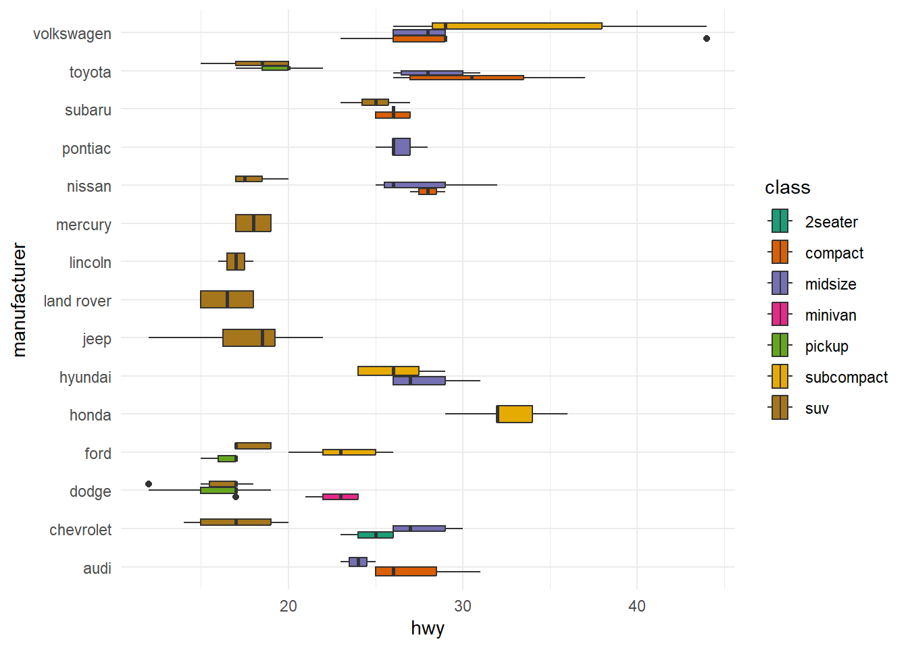
Data: mpg data set, manufacturer, hwy
Aesthetics: hwy mapped to the Y axis, manufacturer mapped to the X axis, fill colour by class
Geometries: Box plot
Scale: Fill colour mapping with “Dark2” palette
Coordinates: Cartesian coordinate system
Guide: Y axis = hwy, X axis = manufacturer, legend shows vehicle class and the colours they represent
library(ggplot2)
p <- ggplot(mpg, aes(hwy, manufacturer, fill = class)) +
geom_boxplot(width = 0.5) +
scale_fill_brewer(palette = "Dark2") +
theme_minimal()
p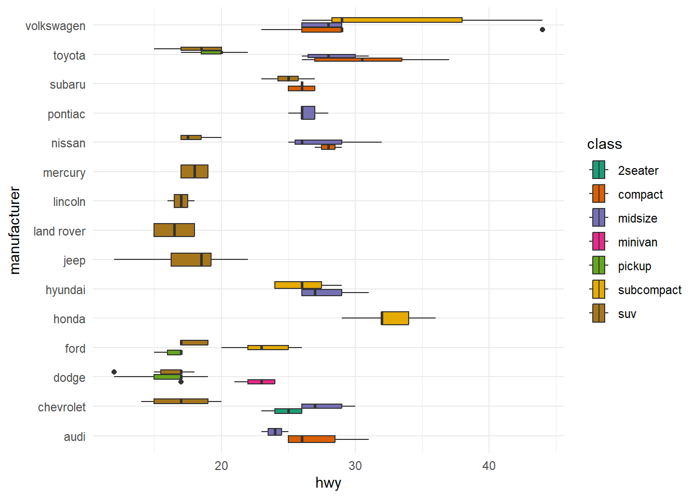
To understand what makes a good specification, first we should define what a specification is. The specification is the structure of the graphic detailing what data set was used, the geometrical transformations made to the data, what was used to visually represent the data (colour, positioning), whether the coordinates system is a Cartesian, polar or map projection, what statistical elements are used and a guide to point axes, legends and titles. (Wilkinson, 2005, p. 6-7). A good specification would be able to clearly point out the different elements that went to into the graphic such that it can be reproduced into different programming languages and makes design choices transparent. These would be broken down into data, aesthetics, geometries, scale, coordinates and guide.
In the data section of the specification, it should show which data sets were used, the variables from said data set and which axes they represent. In Figure 1, it uses the mpg data set and the variables it uses from that data set are hwy and manufacturer.
In the aesthetics section of the specification, it should tell you how the variables are being visually represented. It should cover things such as position, fill colour and grouping. In the case of Figure 1, the aesthetics would be that hwy is mapped to the Y axis, manufacturer is mapped to the X axis and the fill colour is class.
In the geometries section of the specification, it should tell you what geometrical transformations were made to the data. In Figure 1, the geometrical transformation was a box plot.
In the scale section of the specification, it should tell you what changes were made to the aesthetics. In Figure 1, the scale would be using the “Dark2” palette to change the fill colours used by ggplot.
In the coordinates section of the specification, it should tell you what coordinates system the graphic is using and where values are in the graphic. In Figure 1, it uses a Cartesian coordinates system.
In the guides section of the specification, it should tell you where crucial information is relating to the graphic. This would include labelled axis, titles and legends. In Figure 1, the Y and X axis were kept as they were which was hwy and manufacturer. It has a legend which shows vehicle class and colour.
In the terms of the grammar of graphics, aesthetics are the variables in which the data gets transformed. This would usually consist of the data set, the variables in the data set which would be used for the X and Y axis and the fill colours. (Wilkinson, 2005, p. 255) In terms of ggplot, aesthetics are typically represented by the aes() function (Wickham et al., 2024). One example of this is
ggplot(economics, aes(date, unemploy))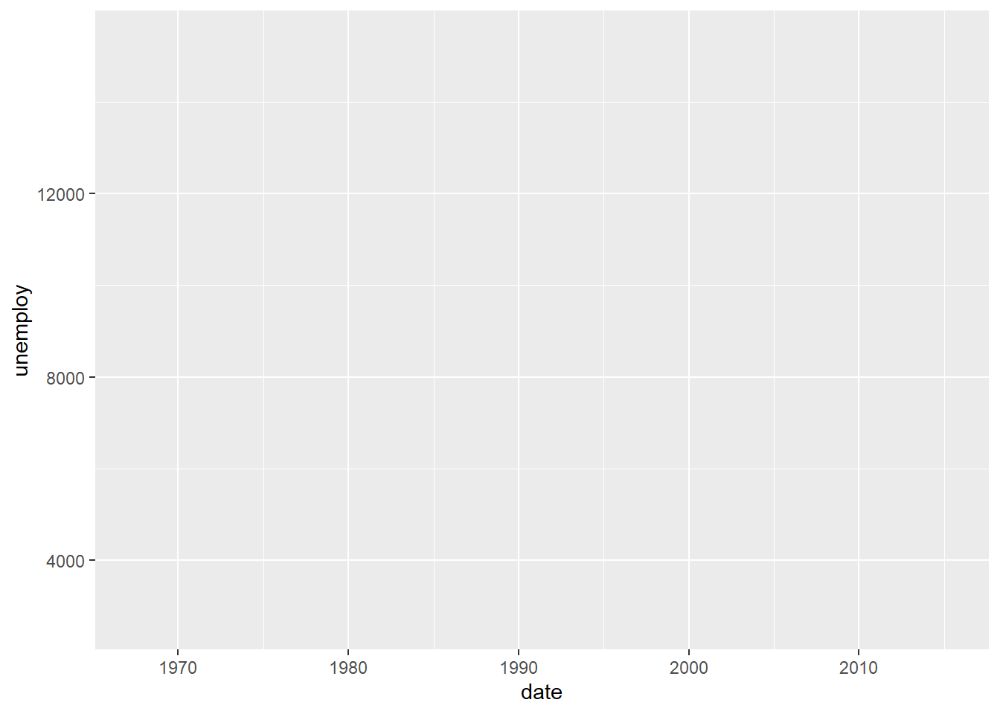
In this example, the aesthetics function is mapping the date variable from the economics data set to the X axis and the unemploy variable to the Y axis. Although aesthetics don’t render anything on their own, they are the most important function of the grammar of graphics as they determine the key variables in which the graphic will represent.
In the terms of grammar of graphics, while aesthetics determine what the graphic will consist of, scales and transformations will determine how the data itself is visually represented (Wilkinson, 2005, p. 85). Scales, in particular, determine the way in which a data point would be represented visually. You can think of scales as the rules in which the data values would appear visually. In ggplot, the scale functions can be used to manipulate various elements of a graphic such as the X axis, Y axis or the colour palette (Wickham et al., 2024). An example of this is the scale_y_continous() function. In the Figure 2.1, the scale_y_continous() function is used to limit the data with 5000 being the lowest number and 15000 being the highest number. You would most likely use this to highlight an interesting trend in relation to the rest of the graphic.
library(ggplot2)
economics_plot <- ggplot(economics, aes(date, unemploy)) +
geom_line() +
scale_y_continuous(limits = c(5000, 15000))
economics_plot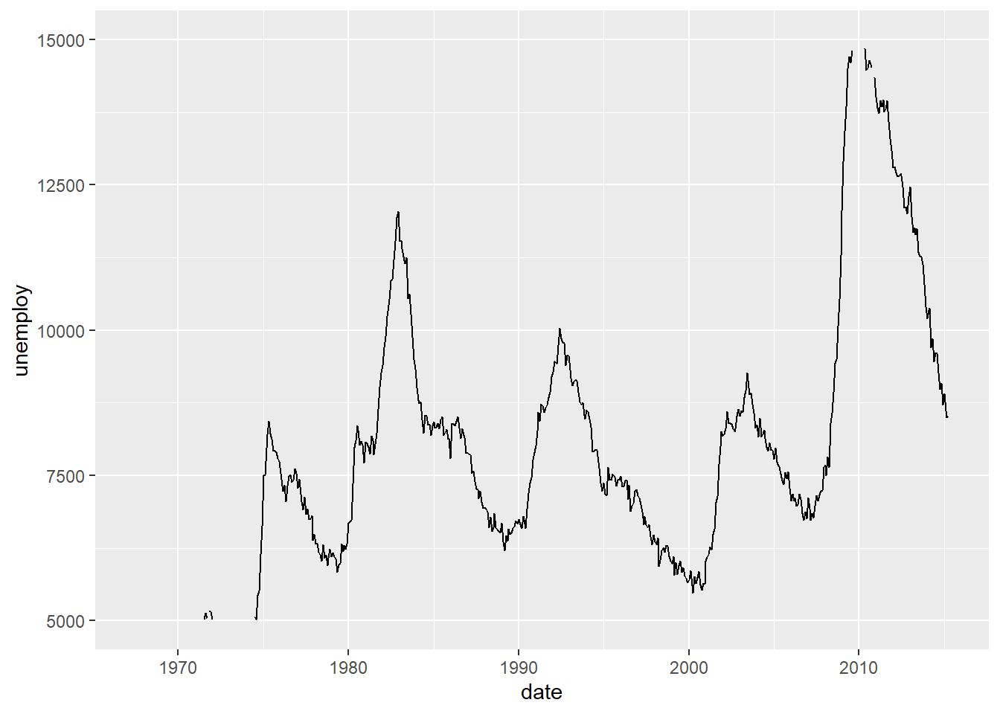
Within the scale functions, transformation to the data can be made. In the terms of the grammar of graphics, transformations can be divided into 3 categories. These are scale transformations, variable transformations and coordinate transformations. Scale transformations display the data as it is but with a transformed axis without transforming the statistical result. In the previous graphic, scale_y_continous() was used to limit the Y axis to the numbers between 5000 - 15000. Variable transformations alter the data before any plots have been made. In terms of ggplot, variable transformations can be made to data through the use of functions such as log(). These functions can be used within the aes() function or outside of it. log() here is used to make a logarithmic transformation to the data before it is plotted. It would make variables with large numbers such as the employ variable easier to read on a graphic.
library(ggplot2)
economics_plot <- ggplot(economics, aes(date, log(unemploy))) +
geom_line() +
scale_y_continuous()
economics_plot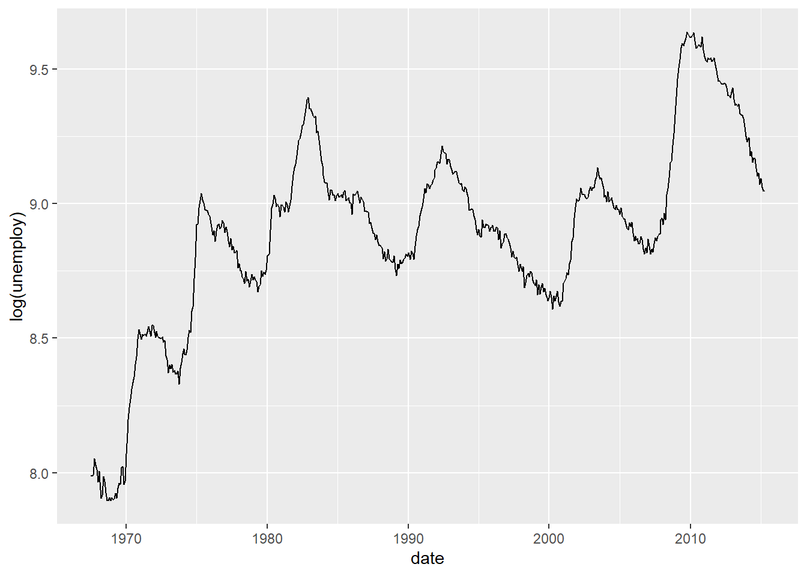
Coordinate transformations can be used change the physical layout of a graphic. In terms of ggplot, we can use the previous to flip the axes using the coord_flip() function (Wickham et al., 2024). Although it would not make sense to flip the axes of a line graph which shows a continual change, it would serve as a good example as to how axes can be transformed.
library(ggplot2)
economics_plot <- ggplot(economics, aes(date, log(unemploy))) +
geom_line() +
scale_y_continuous() +
coord_flip()
economics_plot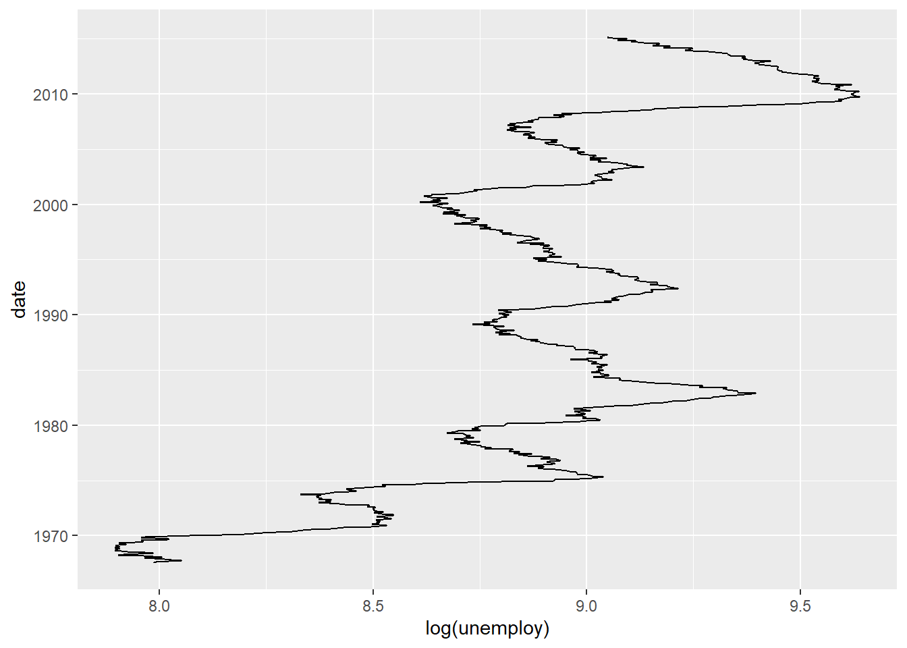
In the grammar of graphics, geometries are the physical shapes that come together to create the graphic such as line, points, areas, paths, partitions, networks and stacks. (Wilkinson, 2005, p. 155) In terms of ggplot, creating geometries is done using any of the geom functions (Wickham et al., 2024). For example, geom_line() would create a line graph.
library(ggplot2)
line_example <- ggplot(economics, aes(date, pop)) +
geom_line()
line_example
In Figure 2.4, a line graph was created to show how the population increased as the years have went on. Line graphs strength come from their ability to show a continual and linear change. Continuing on from geom_line(), we can use geom_point() to show 2 continuous variables and plot a scatter plot.
library(ggplot2)
point_example <- ggplot(economics, aes(unemploy, uempmed)) +
geom_point()
point_example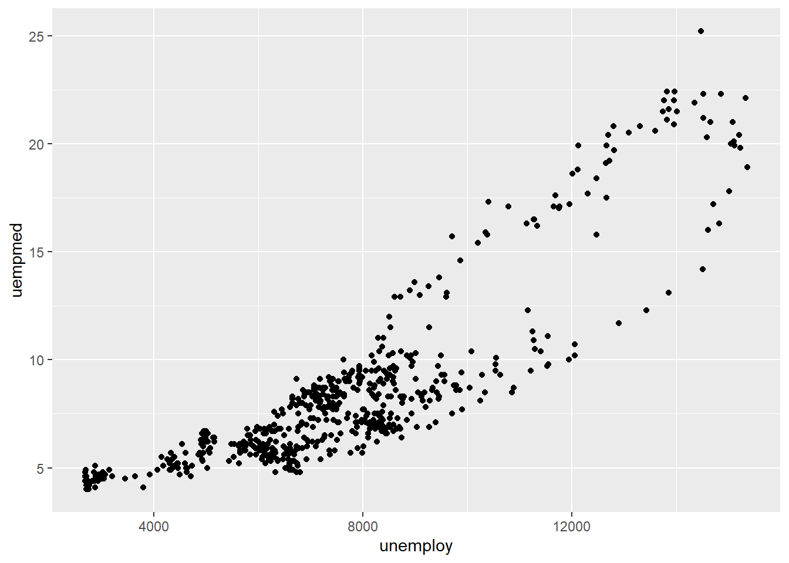
In Figure 2.5, a scatter plot was created to show the relationship between the median unemployment duration and the unemployment rate using the geom_point() function. Scatter plots allow for the relationship between 2 continuous variables to be visualised. Similar to the geom_line() function, we can use geom_area() to create area plot to show a continual change in the data. The difference is that area plots typically use shading between the line and X axis. Area plots’ strength over line graphs is that they create a focus to the trends and highlight the change over time.
library(ggplot2)
area_example <- ggplot(economics, aes(date, pop)) +
geom_area()
area_example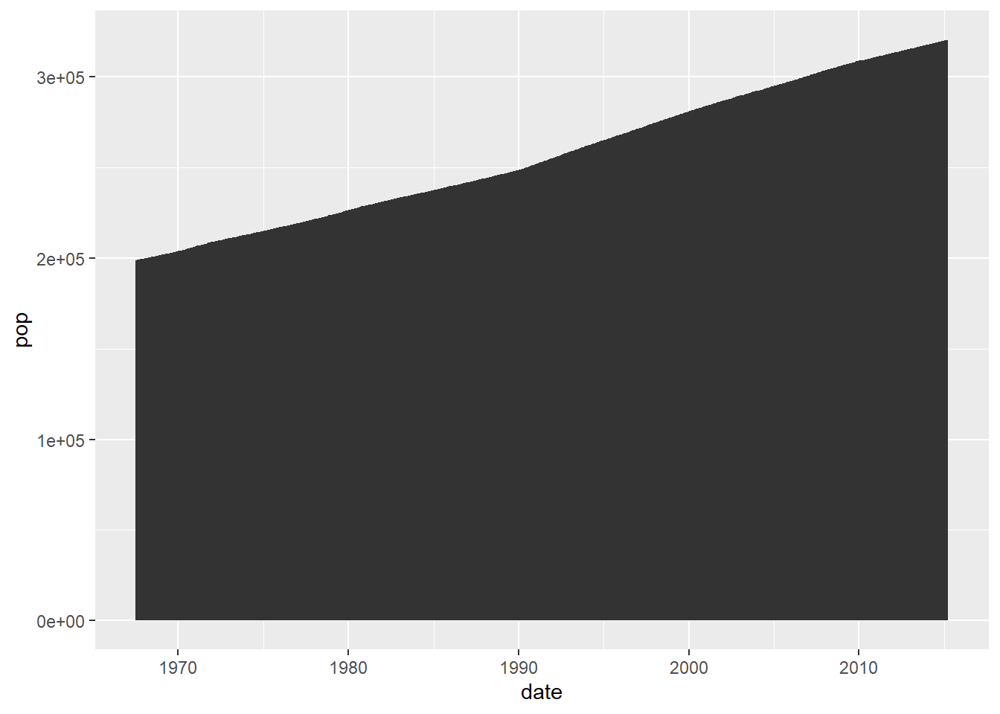
In Figure 2.6, geom_area() was used to create an area plot that showed the increase in population as time went on. Much differently than line graphs, a path graph can be created using the geom_path() function. Path graphs are used to show trajectories and cyclic movement. They typically do not follow the X or Y axis but instead put an emphasis on movement through the data.
library(ggplot2)
path_example <- ggplot(economics, aes(unemploy, uempmed)) +
geom_path()
path_example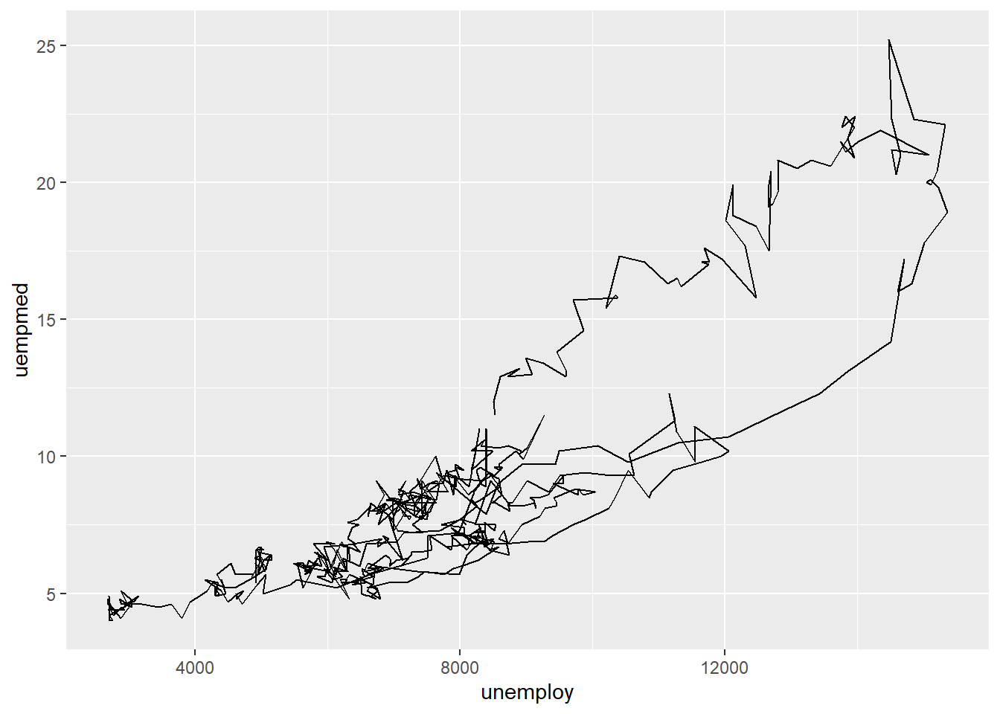
In Figure 2.7, a path graph was used to show the relationship between the median unemployment and unemployment levels. Unlike the example line graph, the line here follows the trends in the data without following the axis which allows it to show the trajectory the data takes. In the terms of the grammar of graphics, partitions are geometries that show data by being divided. Partitions allow for the data to be divided to show categorical proportions. One example of this would be a pie chart. Because ggplot does not have a built in function to create a pie chart, we can create one by first using the geom_bar() and then using the coord_polar() to change the graph from Cartesian to polar.
library(ggplot2)
pie_example <- ggplot(mpg, aes(x = "", fill = class)) +
geom_bar() +
coord_polar(theta = "y")
pie_example
mpg datasetIn Figure 2.8, it shows us the count of each class within the mpg data set. The strength of pie charts is that it allows the viewer to see categorical data at a glace. The viewer would be able to see that the suv class has the highest amount of cars. Much differently than partitions, we can use networks geometries to show relationships of data using nodes and edges. In terms of ggplot, ggplot does not have a built in function for creating network graphs. Instead network graphs can be used through combining geom_segment() and geom_point().
library(ggplot2)
nodes <- data.frame(
name = c("Population", "Unemployment", "Unemployment Median"),
x = c(1, 2, 3),
y = c(2, 3, 2)
)
edges <- data.frame(
x = c(1, 2),
y = c(2, 3),
xend = c(2, 3),
yend = c(3, 2)
)
network_example <- ggplot() +
geom_segment(data = edges, aes(x = x, y = y, xend = xend, yend = yend)) +
geom_point(data = nodes, aes(x = x, y = y)) +
geom_text(data = nodes, aes(x, y, label = name))
network_example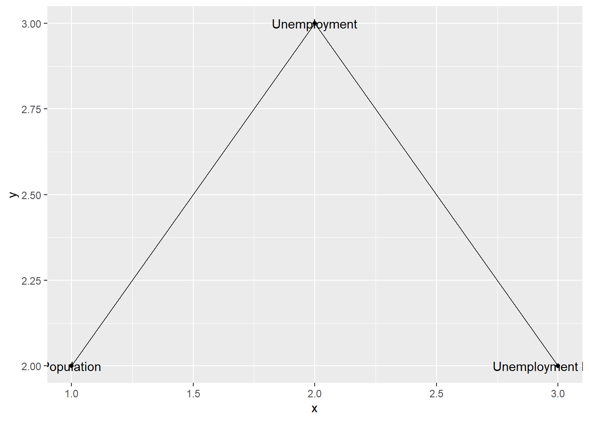
In Figure 2.9, a network graph is created to show the connections between population, unemployment and unemployment median. The strength of network graphs is that it allows for relationships between data points to be clearly visualised. It focuses on the relationships between variables rather than trends. In the terms of grammar of graphics, stacks are a positional adjustment that allows for data to be layered without the worry of collision. The types of stack adjustments are stacks, dodge and jitter. In ggplot, you can use the set the position modifier in geom_bar() to “stack” create a stacked bar graph.
library(ggplot2)
stacked_example <- ggplot(mpg, aes(x = trans, fill = drv)) +
geom_bar(position = "stack")
stacked_example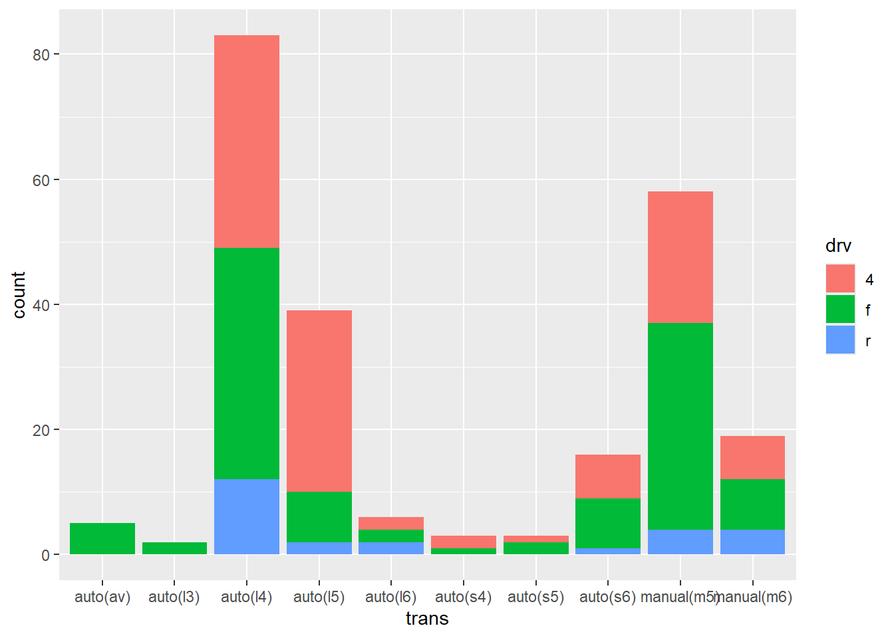
drv) within each transmission (trans) category in the mpg datasetIn Figure 2.10, a stacked bar chart was created using the mpg data set and the trans column as the X axis. Fill was set to drv to create a comparison between the count of the trans columm and how much of eachdrv there is for each group. Stacked bar graphs allow for the data to be categorised and compared with each other much like a pie chart. By stacking the data, stacked bar graphs can show the total of each category without the worry of collision. Within the position modifier of geom_bar(), we can also set it to “dodge” to create a dodge bar graph. Unlike stacked bar graphs where the bars are stacked on one another, dodge bar graphs place the bars side by side. The benefit of this is that it allows for categories to be compared individually within their groups.
library(ggplot2)
dodge_example <- ggplot(mpg, aes(x = trans, fill = drv)) +
geom_bar(position = "dodge")
dodge_example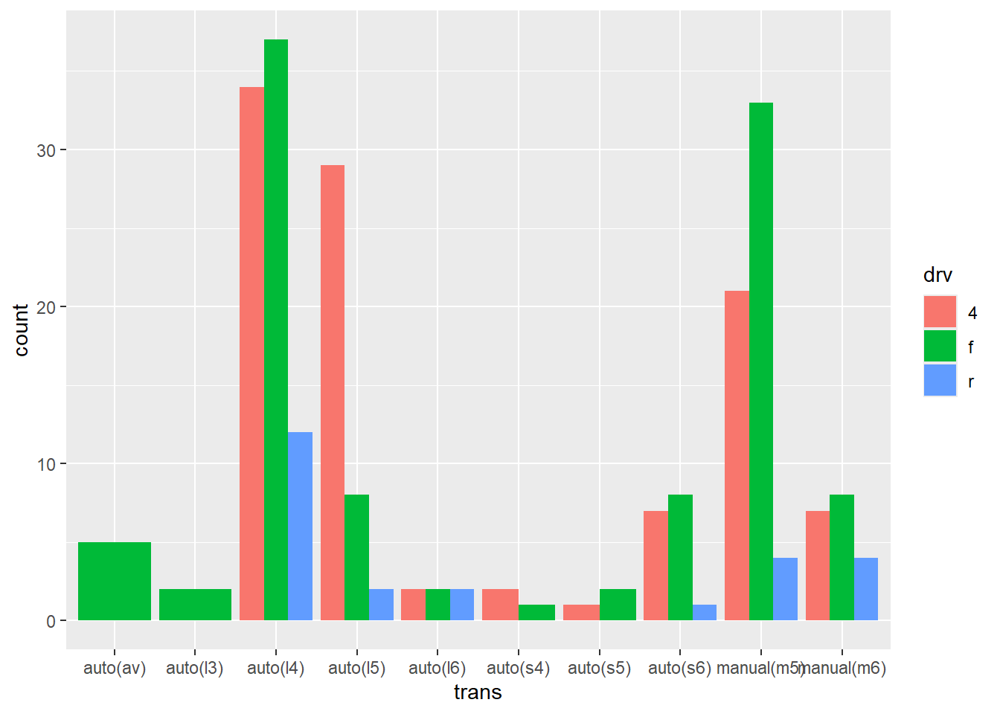
drv) for each transmission (trans) category in the mpg datasetIn Figure 2.11, the same aesthetics were used for the stacked bar graph were used only this time the position modifier was set to “dodge”. This allowed for the positions of the bars to be placed side by side allowing one to easily compare the drv categories within the trans groups. Much like in geom_bar(), the position modifier in geom_point() can be set to jitter to create a jittered scatter plot. Jittering moves the points slightly away from where they would be to allow for overlapping points to be observed.
library(ggplot2)
jitter_example <- ggplot(mpg, aes(class, hwy)) +
geom_point(position = "jitter")
jitter_example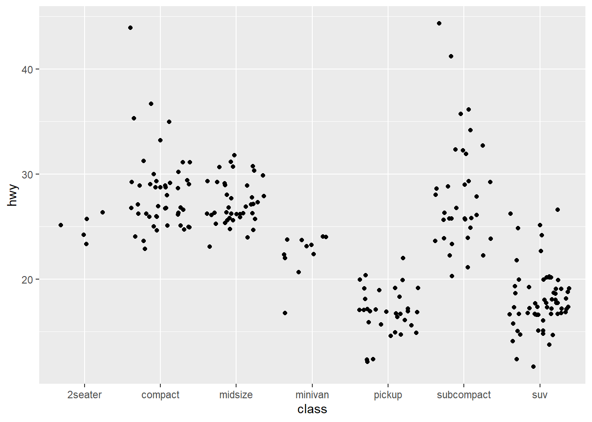
hwy) across vehicle classes (class) in the mpg datasetIn Figure 2.12, a jittered scatter plot using the class column and hwy column in the mpg data set was made. In the hwy column, there are many repeated variables. Without a jitter, these points would overlap and thus not be able to be seen. But with the use of jitter, it allows us to see the repeated plot points without removing the original structure of the graphic. In the grammar of graphics, statistical elements are the mathematical calculations done to data before it is transformed. The data would be summarised before any geometries are created. In ggplot, statistical elements are calculated automatically before any geometries are created. For example, in geom_bar(), stat_count() is used to calculate the number of positions of each x positions. The advantage of this is that ggplot would do any complex calculations and visualise the data correctly.
If geometries are the shapes that data takes when visualised, coordinates would be where those shapes are placed. (Wilkinson, 2005, p. 179) In the grammar of graphics, the most common coordinate systems are Cartesian and polar. Cartesian coordinates systems can be defined by their use of XYZ axis. Their use of these axis allow for trends to be easily recognised. In ggplot, Cartesian coordinates systems are the default. coord_cartesian() can be used to set limits on the X and Y axis using the xlim and ylim modifiers (Wickham et al., 2024)
library(ggplot2)
cartesian_example <- ggplot(economics, aes(date, unemploy)) +
geom_line() +
coord_cartesian(ylim = c(5000, 15000))
cartesian_example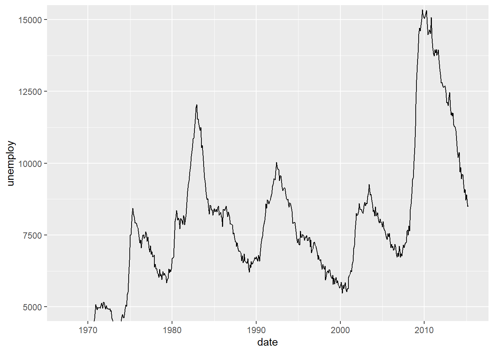
Much like the limits modifier in scale_y_continuous(), we can use ylim to limit the axes. One benefit of using ylim in coord_cartesian() as opposed to limits in scale_y_continuous() is that ylim doesn’t remove any of the data below 5000 but instead zooms in on that range. On the other hand, polar coordinates are defined by not having a typical XYZ axis but by how far they are from the central point. The most common use of polar coordinates are pie charts. In ggplot, to create a pie chart, you would first have to create a bar chart using geom_bar() then using coord_polar() to transform it into a polar coordinate graphic.
library(ggplot2)
polar_example <- ggplot(mpg, aes(x = "", fill = class)) +
geom_bar() +
coord_polar(theta = "y")
polar_example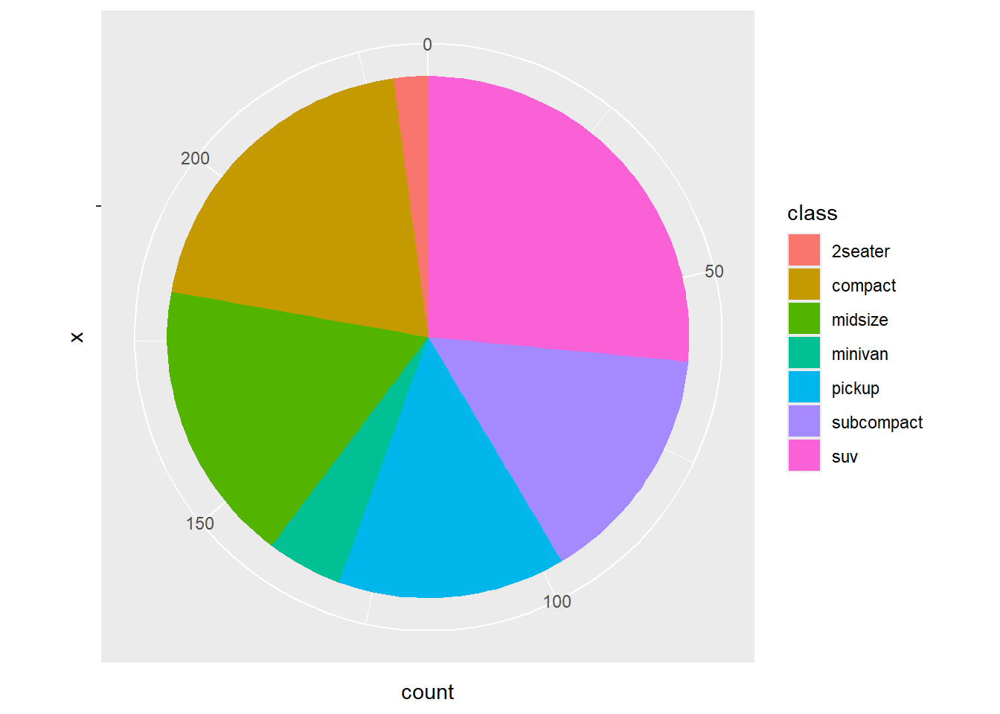
mpg dataset using polar coordinatescoord_polar() has many modifiers to suit the graphic you wish to create. You can use the theta variable to choose between mapping the X or Y axis. You could also use the direction modifier to set it clockwise or anti clockwise. The benefit of polar coordinates as opposed to Cartesian is that polar coordinates make efficient use of space for comparing part-to-whole relationships or highlighting symmetry. Much like coord_cartesian, coord_polar does not remove or edit any of the data.
To put this all together, guides are used to help the viewer decode and understand the graphic. In the grammar of graphics, guides are labeling, legends and axes. (Wilkinson, 2005, p. 346) In ggplot, if labels are not specified it will default to using the mappings within the aes() function. Renaming titles, axes and legends can be done through the use of labs() function (Wickham et al., 2024). This takes the X axis, Y axis, title and subtitle as arguments. Modifying the legend from can be done through the use of the theme() function. Within this function many changes can be made such as the size or positioning of the legend. You may want to do this so that the legend is clear and doesn’t conflict with the graphic.
library(ggplot2)
guides_example <- ggplot(mpg, aes(hwy, manufacturer, fill = class)) +
geom_boxplot(width = 0.5) +
theme(legend.key.size = unit(1, "cm")) +
labs(title = "Highway MPG by Manufacturer",
x = "Highway MPG",
y = "Manufacturer")
guides_example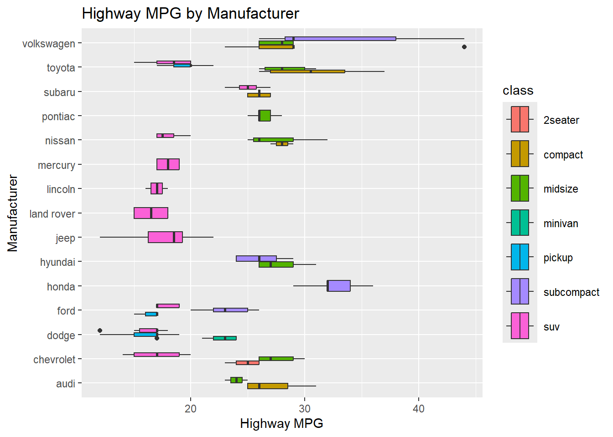
hwy) by manufacturer, with customized legend size and axis labelsIn Figure 2.15, the X axis and Y axis were given appropriate and more intuitive labels. Through the use of theme() and its modifier legend.key.size, the legends size was set to 1cm. This make the legend larger and ensures it doesn’t conflict with the graphic. In the grammar of graphics, facets split your data into separate panels while keeping shared axes. (Wilkinson, 2005, p. 319) This allows for comparisons to be made more clearer. Facets are best used when comparisons between distributions or subgroups are important to the graphic. In terms of ggplot, facet_wrap() can be used to create a graphic with multiple panels.
library(ggplot2)
facets_example <- ggplot(mpg, aes(hwy, manufacturer, fill = class)) +
geom_boxplot(width = 0.5) +
theme(legend.key.size = unit(1, "cm")) +
labs(title = "Highway MPG by Manufacturer",
x = "Highway MPG",
y = "Manufacturer") +
facet_wrap(~drv)
facets_example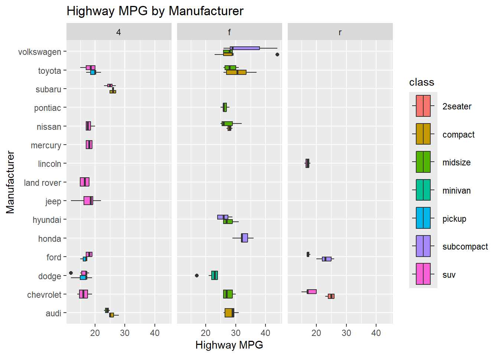
hwy) by manufacturer, split by drive type (drv), with customized legend size and axis labelsIn Figure 2.16, facet_wrap() was used to create multiple panels of the “Highway MPG by Manufacturer” graphic using the drv column in the mpg data set as the groups the data was facetted into. This allows for easy comparisons between the drive of the vehicles, their manufacturers and highway mpg. facet_wrap() also allows for the different panels to share the same panels (Wickham et al., 2024)
In conclusion, the key to making a well produced graphic is using geometries and coordinates to shape and place the data to make a compelling graphic. Declaring aesthetics to define the data as well as using guides to help the user navigate and decode the graphic. Scales can be used to further enhance specific elements of a graphic such as the X or Y axis or the colour. Facets can be used to highlight key groups and create clear comparisons. All this together allows for a compelling and well produced graphic to be made.
library(ggplot2)
mpg_cartesian <- ggplot(mpg, aes(manufacturer, fill = class)) +
geom_bar(position = "stack") +
scale_fill_brewer(palette = "Dark2") +
coord_flip() +
facet_wrap(~year) +
labs(x = "Manufacturer",
y = "Count",
title = "Count of Class by Manufacturer separated by Year")
mpg_cartesian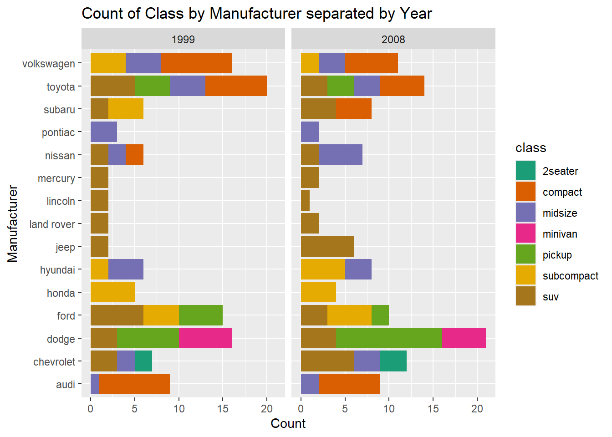
library(ggplot2)
mpg_polar <- ggplot(mpg, aes(x = "", fill = class)) +
geom_bar() +
scale_fill_brewer(palette = "Dark2") +
coord_polar(theta = "y") +
facet_wrap(~year) +
labs(title = "Proportion of Classes separated by Year") +
theme_void()
mpg_polar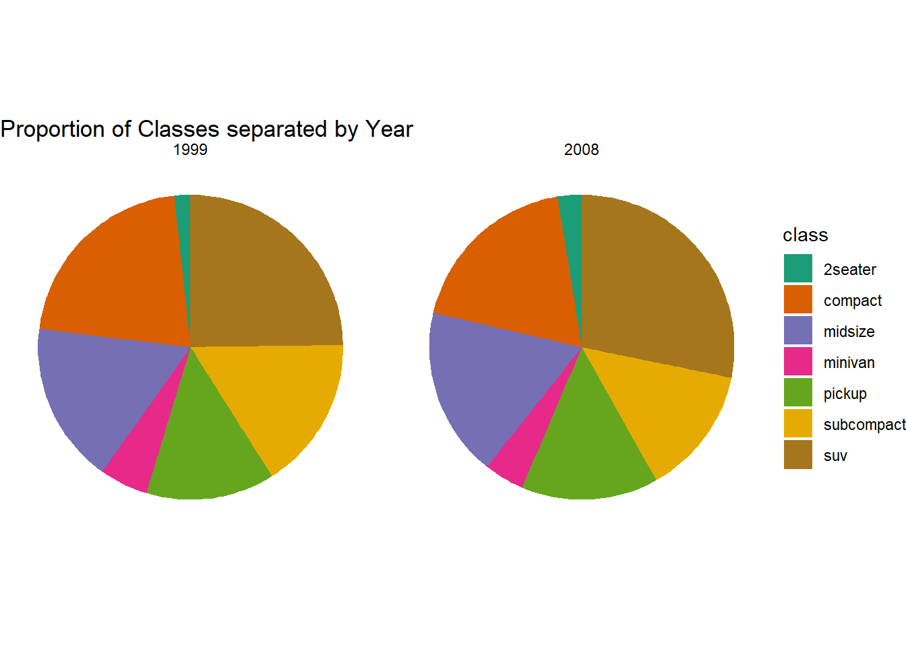
In the Cartesian example above, the mpg data set was used to create a stacked bar chart showing the count of the class of cars by manufacturer and separated by year. manufacturer was used to create the X axis. Because geom_bar() was used, the Y axis automatically defaults to count. The fill colour was set to class allowing the bars to be distinguished by class. For the geometries of this graphic, geom_bar() was used to create a stacked bar chart. Setting the position modifier to stack allows for geom_bar() to become a stacked bar chart. In terms of ggplot, geom_bar() uses stat_count by default for statistical transformations which allows for strong categorical comparisons as it counts each individual case in each group and creates bars proportional to that count. For the scales, scale_fill_brewer was used to change the colour palette to Dark2 which was used by fill to allow for the differences between the classes to be visually distinct. coord_flip() was used to flip the graphic to allow for the X and Y axis without transforming the data to allow for the categories to be easily distinguishable. coord_flip() also gives the labels on the X axis space which stops any overlapping and allows for improved readability. The use of faceting by year here allows for the graphic to tell a compelling story through time by separating the data into 2 panels. How it is used here is to show how the vehicle classes change over time. The use of labs() in this example allows for the X axis, Y axis and Titles be labelled. GGPlot already does this but using the labs() function allows for the labels to be more intuitive. In this case, the X and Y axis did not need modifying as they were already concise. The graphic did need a title so that a user may understand what the graphic represents.
Much of the principles used in the Cartesian graphic apply to the polar graphic. The same data set was used and fill was set to class. The X axis was set to ““ which tells ggplot to stack all the variables into one bar so that it can later create a pie chart. Much like the Cartesian graphic, fill was set to class. For the geometrical transformations, geom_bar() was used without any modifiers. This is because coord_polar() with the theta modifier set to y was used. coord_polar() is used to transform a Cartesian coordinates system into a polar system by mapping data around a central point. The theta modifier simply asks for which axis will be mapped which in this case is the Y axis. The facets and scales of the polar graphic did not need to be different than the Cartesian example as it still conveys the same visually compelling trends. theme_void() was used to create a completely empty theme.It gets rid of any unnecessary details left by default such as the unlabeled X and Y axis and background. Because the main focus of this graphic is the proportions of the pie chart, the axis and background are not needed as they distract the user from the graphic.
Visual perception differs considerably between Cartesian and polar graphics. Cartesian graphics like stacked bar charts make use of X and Y axis to encode data using position and length. As opposed to polar graphics such as pie charts, stacked bar charts allow for values to be compared. In the Cartesian example above, the length and positioning of the bars make it so that the viewer can compare the vehicle class counts across the manufacturers and between years. In contrast, pie charts compare data through the use of angles and area. Pie charts show comparisons through part to whole relationships. The disadvantage of this is that it doesn’t allow for specific values to be compared. In the polar example above, the user can tell that SUVs are the main cars being manufactured as it is the largest portion of the graphic. Faceting can further affect perception when it comes to graphics. Faceting by year allows for the comparisons to be made without over plotting. In the pie chart above, we can see that in 1999 SUVs made up the majority of car classes but in 2008 they are not only still majority class but have increased since 1999. The downside to faceting is that absolute totals are hard to compare as the data is split into different panels. Overall, faceting allows for clear comparisons to be made while reducing over plotting. By changing geometries, coordinates and facets, the graphics can convey different interpretations of the data. It is important to use the right elements of the grammar of graphics for effective data visualisation.
library(ggplot2)
library(gganimate)
economics_anim <- ggplot(economics, aes(date, unemploy)) +
geom_path() +
labs(title = "Unemployment vs Population",
x = "Date",
y = "Number of unemployed")
anim <- economics_anim + transition_reveal(date)
anim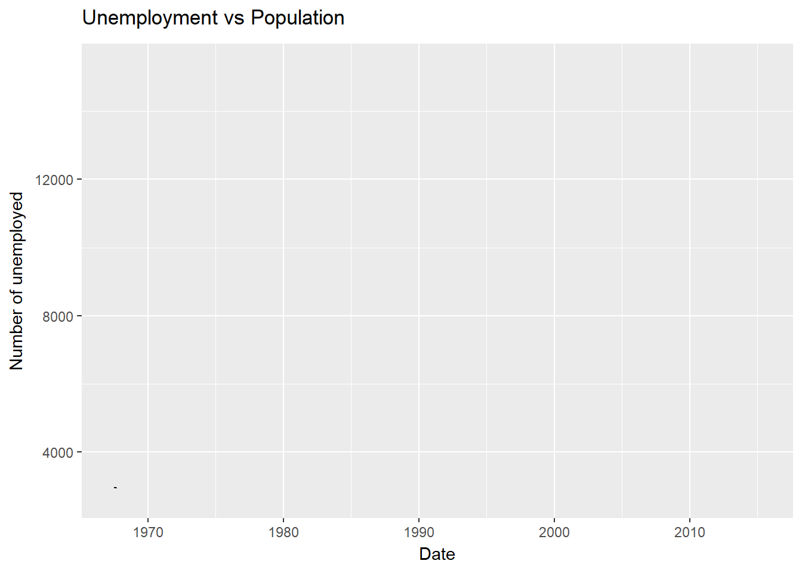
In this animation, it shows the number of unemployed as time goes on. It shows a major spike in unemployment during the 2008 financial crisis. Animation is a key factor for data visualisation as it allows for trajectories to be observed through motion. It also allows for complex patterns and shifts to be observed that may be difficult to see in static graphics. One downside to animation is that it makes precise comparisons difficult to make as it focuses on motion.
Wilkinson, L. (2005) The Grammar of Graphics. 2nd edn. New York: Springer.
Wickham, H. et. al. (2024) ggplot2: Create Elegant Data Visualisations Using the Grammar of Graphics. Available at: https://ggplot2.tidyverse.org (Accessed: 8 January 2026).
ChatGPT GPT4.5 was used to help with structure of this assignment, captions for the figures and code correction